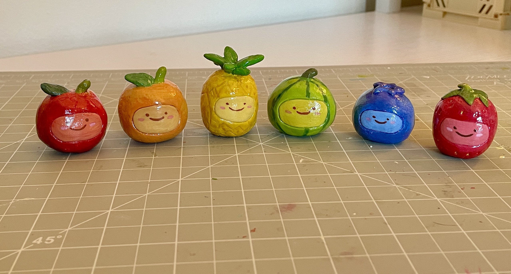
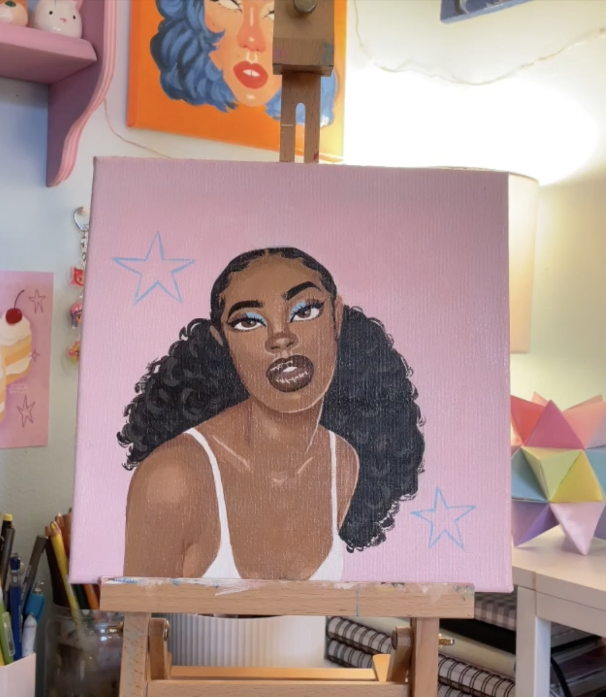
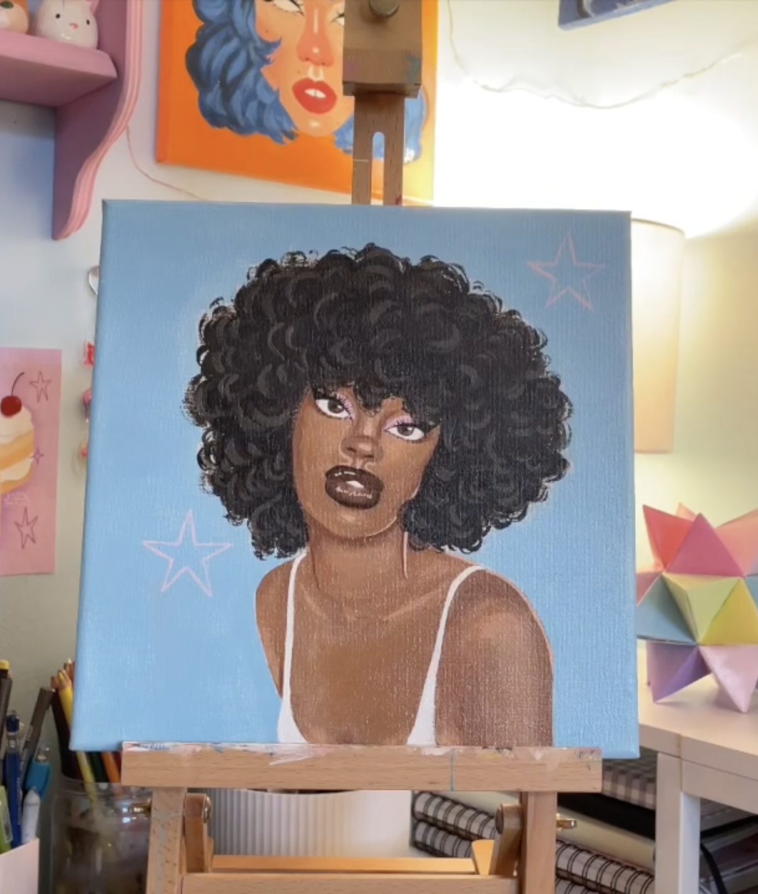

"Clay Fruit Friends" crafted out of air dry clay and painted with gouache paint.

Inspired by apples, oranges, pineapples, watermelons, blueberries and strawberries alike. These sculptures were handcrafted, painted with gouache paint, and glossed with a clay glaze for shine and durabilty. These adorable clay sculptures can sit on any surface such as your desk or shelf.
"Rose" an acrylic painting on a 10 x 10 inch canvas rested on a desktop easel.

Portraits are among my favorite things to draw or paint. I enjoy creating my own original characters with their own names, faces and stories. `"Rose" named after the floral colored background, is accompanied by her twin identical sister painting,"Diamond". Inspired by the pastel blue hues of a shiny gem. These portraits were painted simultaneously to keep a cohesive color palette and identical look.
"Diamond" an acrylic painting on a 10 x 10 inch canvas.
